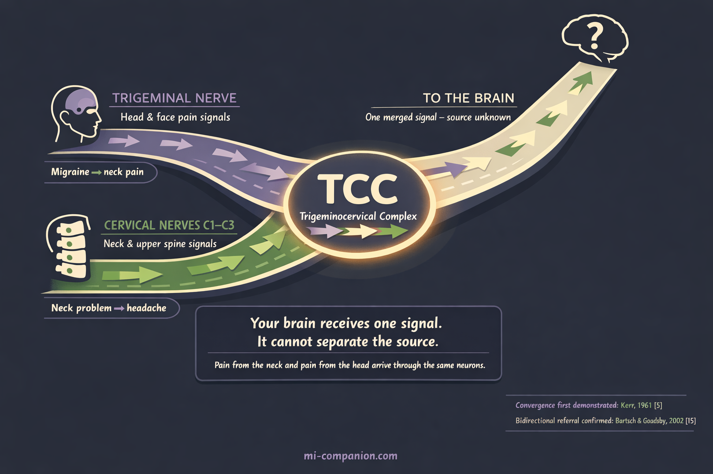
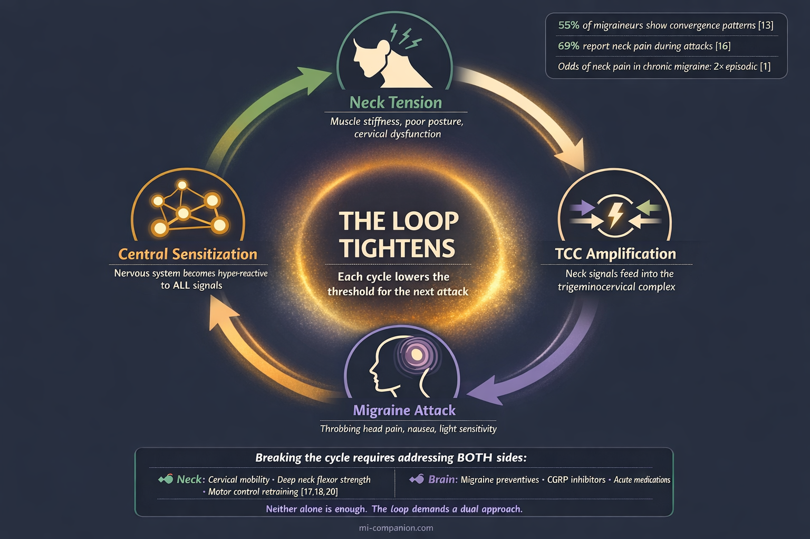

By Rustam Iuldashov
30 years lived experience with chronic migraine | Sources: 25 peer-reviewed references including Cephalalgia (n=51,000+), PM&R (meta-analysis of RCTs), Journal of Headache and Pain (n=487), Brain, BMC Musculoskeletal Disorders | Last updated: March 9, 2026
Medical Review: This content is based on peer-reviewed research from Cephalalgia, Headache, PM&R, Journal of Headache and Pain, Brain, BMC Musculoskeletal Disorders, Musculoskeletal Science and Practice, Frontiers in Human Neuroscience, and Applied Sciences.
Important Notice: This article is for informational purposes only and does not replace professional medical advice. The author is not a licensed physician or healthcare professional. Cervicogenic headache diagnosis requires clinical examination and may involve diagnostic nerve blocks. Always consult your doctor.
Key Takeaways
- Neck pain affects 73–90% of people with migraine — more common than nausea — and is linked to significantly greater disability, depression, and anxiety[1, 3]
- The trigeminocervical complex creates a bidirectional pain highway between your neck and brain: neck problems can cause headache, and migraine can cause neck pain, through the same neurons[4, 5]
- Cervicogenic headache mimics migraine convincingly, with misdiagnosis rates reported as high as 92%[7]
- Over half of migraine patients show trigeminocervical convergence patterns, suggesting cervical involvement is common, not exceptional[13]
- Physical therapy targeting cervical mobility, deep neck flexor strength, and motor control can reduce headache frequency — and may be the missing piece for migraineurs with persistent neck symptoms[17, 18]
The stiffness starts at the base of your skull. It creeps upward — a slow, tightening grip that wraps around your temples. Within hours, the full migraine arrives. And you’re left with a question that millions of people with migraine ask their doctors every year: is my neck causing these headaches, or is my migraine causing the neck pain?
The answer, according to a growing body of neuroscience research, is one that most people never hear. It could be both — at the same time, through the same neural pathway, in a loop that feeds itself.
The Symptom Nobody Talks About
Migraine has a reputation problem. Ask anyone what happens during an attack and they’ll mention throbbing head pain, nausea, sensitivity to light. What they rarely mention is the neck.
They should. A 2022 meta-analysis pooling data from multiple clinical studies found that 77% of migraine patients reported neck pain — making it more common than nausea, the symptom most people consider migraine’s hallmark.[1] Population-based research has confirmed similar numbers: upwards of 75% of adult migraineurs experience neck pain.[2] And for people with chronic migraine, the odds of neck pain are roughly double those in episodic migraine.[1]
The consequences extend far beyond discomfort. A 2024 multicountry study of over 51,000 participants across six nations found that migraineurs with neck pain experienced nearly twice the rate of moderate-to-severe disability compared to those without it. They also reported higher rates of depression (40.2% vs 28.2%), anxiety (41.2% vs 29.2%), and significantly reduced work productivity.[3]
Neck pain isn’t a footnote in the migraine story. It’s a central chapter — one that medicine has been slow to read.
The Relay Station That Blurs Everything
To understand why, you need to look at a small region deep in the brainstem called the trigeminocervical complex (TCC).
Picture a highway interchange. Two major roads merge into a single lane. The trigeminal nerve — the brain’s primary pain messenger for the head and face — sends signals into this interchange. So do the nerves from the top three vertebrae of your neck: C1, C2, and C3. Both sets of signals converge onto the same neurons in the trigeminocervical complex, which relays one combined message to the brain.[4, 5]
The result is bidirectional referral. Pain originating in your cervical spine can travel through the complex and be interpreted as head pain — behind the eyes, across the forehead, deep in the temples. Migraine pain generated by the trigeminal system can travel the opposite direction and be felt as neck stiffness, soreness, and aching.[4, 6]
Your brain receives one signal. It cannot separate the source. Neck pain and head pain arrive through the same door.

The Great Diagnostic Trap
This shared pathway creates one of the most stubborn diagnostic puzzles in headache medicine.
Cervicogenic headache (CEH) — a secondary headache caused by structural problems in the cervical spine — can look almost identical to migraine. It can produce nausea, light sensitivity, sound sensitivity, and pain that worsens with movement.[9, 10] The reason: cervical nociception (pain signaling from the neck) activates the same trigeminocervical nucleus that migraine uses, generating remarkably similar downstream symptoms.
Yet the two conditions are fundamentally different. Migraine is a primary neurological disorder — a brain genetically wired to generate attacks. Cervicogenic headache is a mechanical problem — facet joints, discs, or muscles in the neck sending pain signals upward.[10, 11] The treatment for one may do nothing for the other.
How often does this distinction get missed? One study examining chronic headache patients found that 92% of those with cervicogenic headache had been incorrectly diagnosed.[7] Other researchers have estimated that roughly half of cervicogenic headache cases receive the wrong diagnosis, leading to years of ineffective treatment.[8]
⚠️ When to Seek Emergency Help
Any new, sudden, severe headache — especially with neck stiffness, fever, confusion, vision changes, or weakness — requires emergency evaluation immediately. These symptoms could indicate meningitis, cervical artery dissection, or subarachnoid hemorrhage, not cervicogenic headache or migraine.
Call your local emergency number. Do not use this article to self-diagnose.
There are clinical clues that help distinguish cervicogenic headache from migraine. Cervicogenic headache tends to be fixed on one side — always the same side, attack after attack. Neck range of motion is typically reduced. Pain is triggered or worsened by specific neck movements or sustained awkward postures. The upper cervical region is tender to palpation.[9, 10] The flexion-rotation test, in which a clinician gently rotates your flexed neck, identifies cervicogenic headache with 91% sensitivity and 90% specificity.[12]
But here’s the complication that changes everything: many people don’t have one or the other. They have both.
The Overlap That Rewrites the Rules
A 2022 multicenter study asked migraine patients to map their pain locations on an electronic form. The result: 55% showed a pain pattern consistent with trigeminocervical convergence — meaning their migraine involved significant cervical components.[13] Among people with chronic migraine, the percentage climbed higher still.
Central sensitization explains how this overlap deepens over time. During a migraine attack, neurons in the trigeminocervical complex become hyperexcitable. Signals that would normally be filtered out — minor neck tension, subtle postural strain — get amplified into full pain signals.[14, 15] The neck muscles that started with ordinary stiffness become active pain generators, feeding signals back into the brainstem, which amplifies the migraine, which sensitizes the neck further.
The loop tightens. Each cycle lowers the threshold for the next attack.
A prospective study of 487 migraineurs captured this in real time. Sixty-nine percent reported neck pain during their migraine phase. Among those, 54% noticed the neck pain arriving with the headache, and 24% felt it within two hours before the head pain began — accompanied by other migraine symptoms like nausea, light sensitivity, and vertigo.[16] The researchers posed a question that remains unanswered: does the premonitory phase end where the attack begins, or has the neck been part of the attack all along?

Treating What You’ve Been Missing
This overlap carries a direct clinical message. If cervical dysfunction is contributing to your migraine — as a trigger, an amplifier, or a coexisting condition — treating only the migraine leaves the cycle incomplete.
The evidence for addressing the neck is growing. A 2023 systematic review found moderate-certainty evidence that manual therapy reduced cervicogenic headache frequency by approximately one episode per week compared to sham (simulated) treatment.[17] A program combining spinal manipulative therapy with deep neck flexor exercises showed particular promise, with benefits sustained over the long term.[18]
For migraine patients with persistent neck involvement, the data point toward an integrated approach. A meta-meta-analysis found that manual therapy combined with exercise reduced pain intensity and improved quality of life across migraine, tension-type headache, and cervicogenic headache alike.[19] The pattern that works targets three elements: restoring cervical mobility, strengthening the deep neck flexors, and retraining motor control.[18, 20]
None of this replaces standard migraine treatment. CGRP inhibitors (a newer class of targeted migraine preventives), triptans, preventive medications — these remain essential tools. But if your medications provide only partial relief and your neck is perpetually stiff, a musculoskeletal assessment of the cervical spine may reveal a contributor that no pill can address.
The neck and the brain speak to each other through the same neural pathway. For too many people with migraine, treatment addresses only one side of that conversation. Listening to both could change everything.
⚕️ Important Medical Disclaimer
This article is for informational and educational purposes only and does not constitute medical advice, diagnosis, or treatment. The author, Rustam Iuldashov, is not a licensed physician, neurologist, or healthcare professional. He is a patient advocate with 30 years of personal experience living with chronic migraine.
All clinical claims in this article are sourced from peer-reviewed research published in indexed medical journals. Study designs and sample sizes are noted where applicable.
Always consult a qualified healthcare provider for questions about your individual health, migraine treatment, or medication decisions.
Cervicogenic headache diagnosis requires a clinical examination and may involve diagnostic nerve blocks — do not self-diagnose based on symptoms alone. This content was last reviewed for accuracy on March 9, 2026.
References
- Al-Khazali HM, Younis S, Al-Sayegh Z, Ashina S, Ashina M, Schytz HW. “Prevalence of neck pain in migraine: A systematic review and meta-analysis.” Cephalalgia, 42(7):663–685 (2022). doi:10.1177/03331024211068073. Study design: Systematic review & Meta-analysis. n=pooled from multiple studies.
- Ashina S, Bendtsen L, Lyngberg AC, Lipton RB, Hajiyeva N, Jensen R. “Prevalence of neck pain in migraine and tension-type headache: A population study.” Cephalalgia, 35(3):211–219 (2015). doi:10.1177/0333102414535110. Study design: Population-based cross-sectional. n=1,000+.
- Matharu M, Katsarava Z, Buse DC, et al. “Characterizing neck pain during headache among people with migraine: multicountry results from the CaMEO-I cross-sectional study.” Headache, 64(7):750–763 (2024). doi:10.1111/head.14753. Study design: Cross-sectional observational. n=51,000+.
- Bartsch T, Goadsby PJ. “The trigeminocervical complex and migraine: current concepts and synthesis.” Current Pain and Headache Reports, 7(5):371–376 (2003). doi:10.1007/s11916-003-0036-y. Study design: Review/Electrophysiology.
- Kerr FW. “A mechanism to account for frontal headache in cases of posterior fossa tumours.” Journal of Neurosurgery, 18:60–66 (1961). Study design: Experimental.
- Piovesan EJ, Kowacs PA, Tatsui CE, et al. “Referred pain after painful stimulation of the greater occipital nerve in humans: evidence of convergence of cervical afferents on trigeminal nuclei.” Arquivos de Neuro-Psiquiatria, 59(3-A):539–543 (2001). doi:10.1590/S0004-282X2001000400010. Study design: Experimental. n=12.
- Saremi H, Hemmatjoo M, Kolahi S. “Misdiagnosis of patients with cervicogenic headache: a case series study.” Function and Disability Journal, 1(4):32–37 (2018). Study design: Case series. n=60.
- Luedtke K, et al. Protocol referencing ~50% misdiagnosis rate in cervicogenic headache. BMJ Open (2019). doi:10.1136/bmjopen-2019-031587. Study design: Protocol/Review.
- Piovesan EJ, Utiumi MAT, Grossi DB. “Cervicogenic headache — How to recognize and treat.” Best Practice & Research Clinical Rheumatology, 38(1):101931 (2024). doi:10.1016/j.berh.2024.101931. Study design: Clinical review.
- Van Doorn D, et al. “Cervicogenic headache and occipital neuralgia.” Pain Practice (2024). doi:10.1111/papr.13447. Study design: Clinical review.
- Headache Classification Committee. “The International Classification of Headache Disorders, 3rd edition.” Cephalalgia, 38(1):1–211 (2018). doi:10.1177/0333102417738202. Study design: Classification guideline.
- Hall TM, Briffa NK, Hopper D, Robinson K. Flexion-rotation test diagnostic accuracy. Referenced in Jull G. Musculoskeletal Science and Practice (2023). Study design: Diagnostic accuracy. Sensitivity 91%, Specificity 90%.
- Piovesan EJ, et al. “Prevalence of trigeminocervical convergence mechanisms in episodic and chronic migraine.” Arquivos de Neuro-Psiquiatria, 80(4):351–358 (2022). doi:10.1590/0004-282X-ANP-2021-0180. Study design: Multicenter cross-sectional. n=210.
- Burstein R, et al. Central sensitization in migraine. Referenced in de Tommaso M, et al. “Pathophysiological bases of comorbidity in migraine.” Frontiers in Human Neuroscience, 15:640574 (2021). doi:10.3389/fnhum.2021.640574. Study design: Review.
- Bartsch T, Goadsby PJ. “Stimulation of the greater occipital nerve induces increased central excitability of dural afferent input.” Brain, 125(7):1496–1509 (2002). doi:10.1093/brain/awf166. Study design: Electrophysiological experimental.
- Lampl C, Rudolph M, Deligianni CI, Mitsikostas DD. “Neck pain in episodic migraine: premonitory symptom or part of the attack?” Journal of Headache and Pain, 16:566 (2015). doi:10.1186/s10194-015-0566-9. Study design: Prospective cohort. n=487.
- Demont A, Lafrance S, Gaska C, et al. “Efficacy of physiotherapy interventions for the management of adults with cervicogenic headache: A systematic review and meta-analyses.” PM&R, 15(5):613–628 (2023). doi:10.1002/pmrj.12856. Study design: Systematic review & Meta-analysis. n=265 (primary outcome).
- Jull G. “Cervicogenic headache.” Musculoskeletal Science and Practice, 66:102804 (2023). doi:10.1016/j.msksp.2023.102804. Study design: Narrative review (multicentre RCT program).
- Espí-López GV, et al. “Effectiveness of exercise and manual therapy as treatment for patients with migraine, tension-type headache or cervicogenic headache: an umbrella and mapping review with meta-meta-analysis.” Applied Sciences, 11(15):6856 (2021). doi:10.3390/app11156856. Study design: Meta-meta-analysis.
- Anarte-Lazo E, et al. “Differentiating migraine, cervicogenic headache and asymptomatic individuals based on physical examination findings: a systematic review and meta-analysis.” BMC Musculoskeletal Disorders, 22:755 (2021). doi:10.1186/s12891-021-04595-w. Study design: Systematic review & Meta-analysis. n=62 studies.
- Al-Khazali HM, Krøll LS, Ashina H, et al. “Neck pain and headache: Pathophysiology, treatments and future directions.” Musculoskeletal Science and Practice, 66:102804 (2023). doi:10.1016/j.msksp.2023.102804. Study design: Position paper/Review.
- Ashina S, Bendtsen L, Burstein R, et al. “Pain sensitivity in relation to frequency of migraine and tension-type headache with or without coexistent neck pain.” Scandinavian Journal of Pain, 23(1):76–87 (2023). doi:10.1515/sjpain-2022-0030. Study design: Population-based cross-sectional. n=496.
- Robinson CL, Christensen RH, Al-Khazali HM, et al. “Prevalence and relative frequency of cervicogenic headache in population- and clinic-based studies: A systematic review and meta-analysis.” Cephalalgia (2025). doi:10.1177/03331024251322446. Study design: Systematic review & Meta-analysis.
- StatPearls. “Cervicogenic Headache.” NCBI Bookshelf, updated 2022. Prevalence 0.4–4%; C2-3 joint involved in ~70% of cases.
- Eigenbrodt AK, Christensen RH, et al. “Premonitory symptoms in migraine: a systematic review and meta-analysis of observational studies.” Journal of Headache and Pain, 23(1):140 (2022). doi:10.1186/s10194-022-01510-z. Study design: Systematic review & Meta-analysis.

How We Create Content
- Peer-reviewed sources only. Cephalalgia, Headache, PM&R, Journal of Headache and Pain, Brain, BMC Musculoskeletal Disorders, Musculoskeletal Science and Practice, Frontiers in Human Neuroscience, Applied Sciences.
- Study transparency. Study design and sample sizes noted for all clinical references.
- Source verification. All claims backed by numbered references with DOI links.
- Experience + Science. 30 years personal migraine experience combined with peer-reviewed evidence.
- Regular updates. Articles reviewed when significant new research emerges.
- No conflicts of interest. No funding from physical therapy, chiropractic, or pharmaceutical organizations.
Track Your Neck Pain. Find the Pattern.
Migraine Companion helps you log attacks, track triggers including neck involvement, and build the personal dataset that turns unpredictable pain into actionable patterns.
Last reviewed: March 2026
Next scheduled review: September 2026